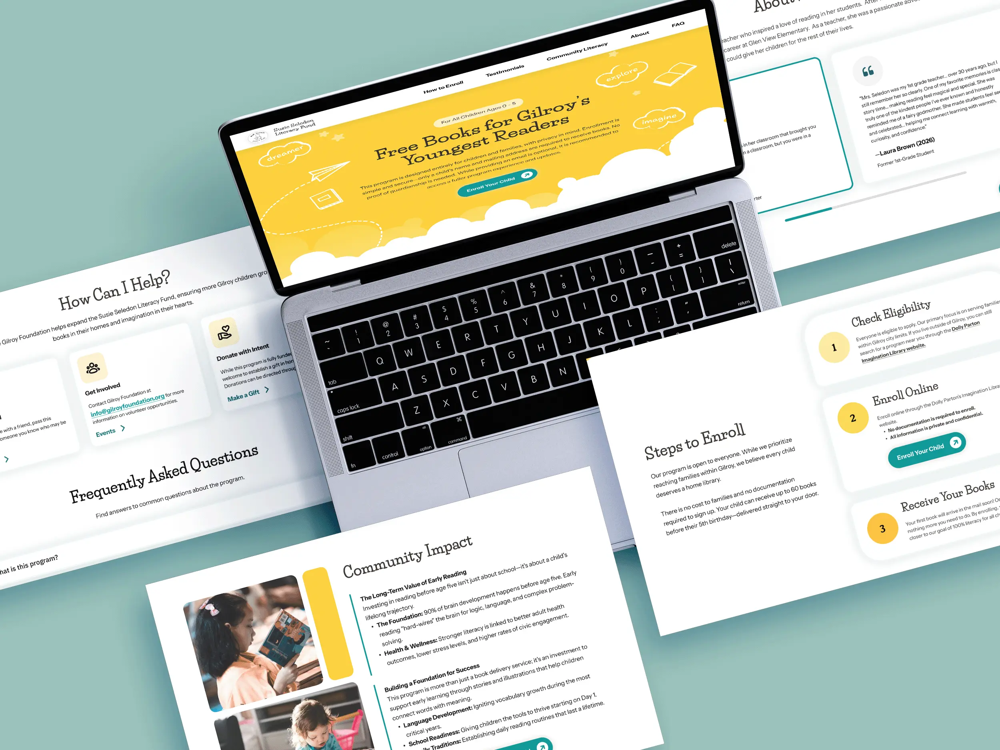
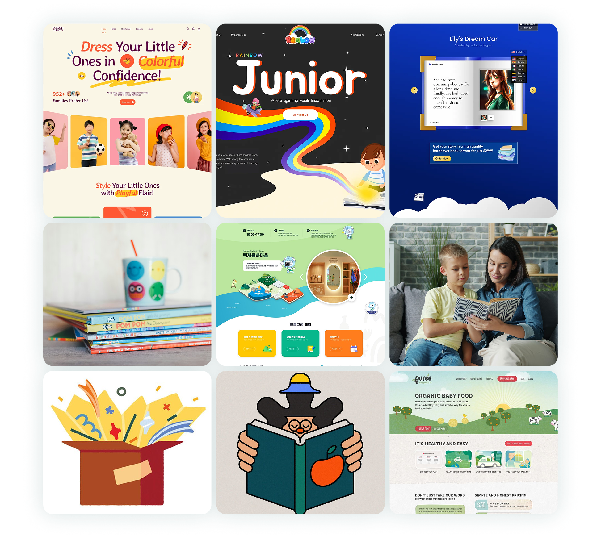
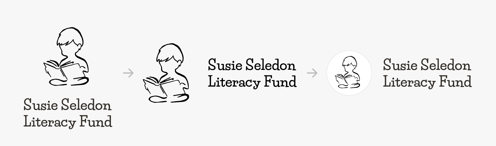
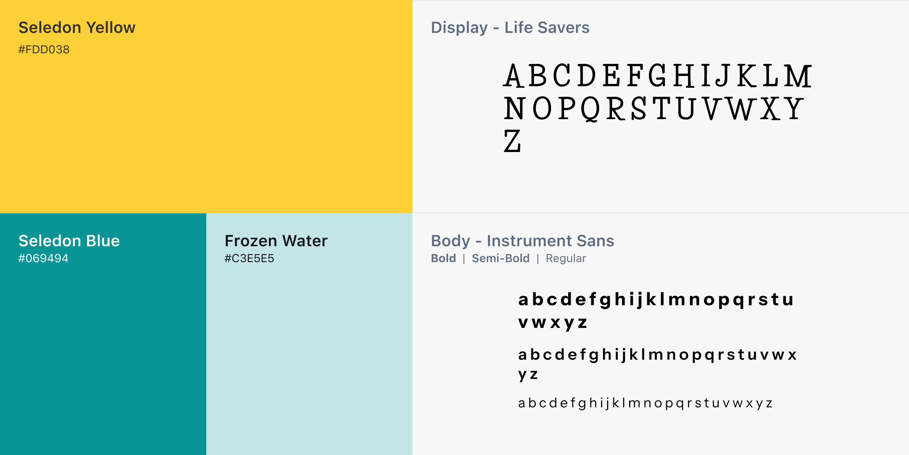
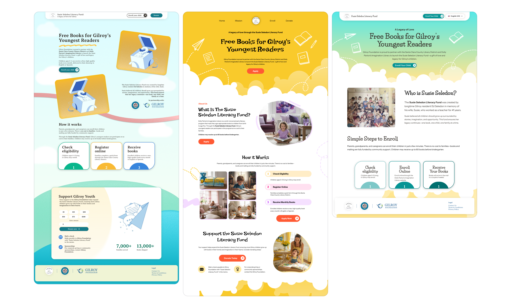
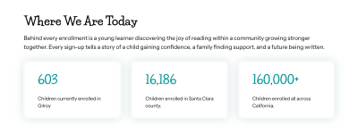
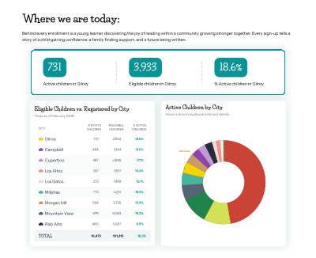
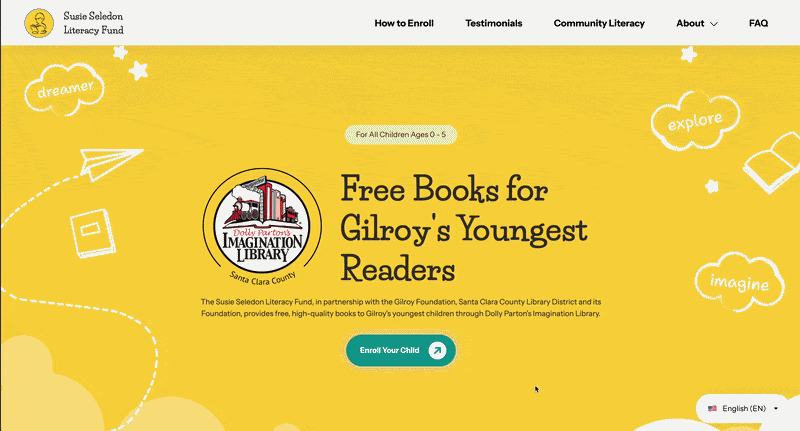

Designed and shipped a website for a children's literacy fund in Gilroy, CA — coordinating four stakeholder groups through a three-day final deadline.

Shipped and in active iteration — I still support it as partner needs change.
Four stakeholder groups aligned on a single brand system and site structure.
Absorbed a late two-org scope expansion and still launched on deadline.
The fund provides free books to families with children under 5 in Gilroy, CA. This fund created by Edward (Ed) Seledon is in memory of his late wife, Susie Seledon, a kindhearted kindergarten teacher. This fund had a mission, three partner organizations, but no brand, no site, and no copy.
Our goal was to build a website that consolidated all four stake holder groups: the Gilroy Foundation as the client, Ed as the donor honoring his late wife, the Santa Clara County Library District and Dolly Parton's Imagination Library.
How might we create a brand and site that honored Ed's personal vision while clearly serving the practical needs of three partner organizations?
Since the fund had no existing visual identity, I started by gathering inspiration around warmth, childhood literacy, and approachable family-facing design. Explored three logo directions, paired with Seledon Blue and Seledon Yellow, Life Savers for display and Instrument Sans for body.




Three homepage directions went to stakeholders side by side — the fastest way to surface disagreement before high-fidelity work started.
Ed wanted enrollment numbers compared across Gilroy, the county, and the country. When he later asked to compare Gilroy against individual county cities, I redesigned it as a pie chart but hit a problem that wasn't visual at all.
Gilroy's enrollment data updates monthly. County-wide data updates bi-annually. Charting them within the same pie chart would have implied both were equally current but Gilroy data would be ahead a couple months before the bi-annual updates.
I flagged it and discussed a workaround. The final design would distinguish two types of data visually instead of dropping the county comparison Ed wanted.


Gilroy's monthly figures sit in their own bar; the quarterly county comparison lives below with an "as of" date, so the two are never read as the same snapshot.
Deep into revisions, the library partners submitted new asks: new copy, a Dolly Parton's Imagination Library (DPIL) page, a community literacy resources page, and new logos across nearly every section. At the same time the launch date changed. Mattie, the boy who is the face of the site, was moving away, and the site needed to be launched before he left. I set up a meeting with stakeholders to consolidate needs and priorities, things that can be done post launch, and things that needed to be completed before launch.
I made the call to fold the community literacy content into the homepage instead of building it as a separate page, and to push the DPIL page to post-launch so it could get a full, unrushed build.

Launched site — homepage scroll-through with the community literacy content folded in.
Through three intermediaries, an open-ended question costs a full review cycle. I now ask for decisions, not opinions.
A chart can be beautiful and still lie. Checking whether the numbers are comparable is my job, not someone else's.
Modular sections aren't a nicety. They're what let a three-day deadline stay a three-day deadline.
last updated august 2026